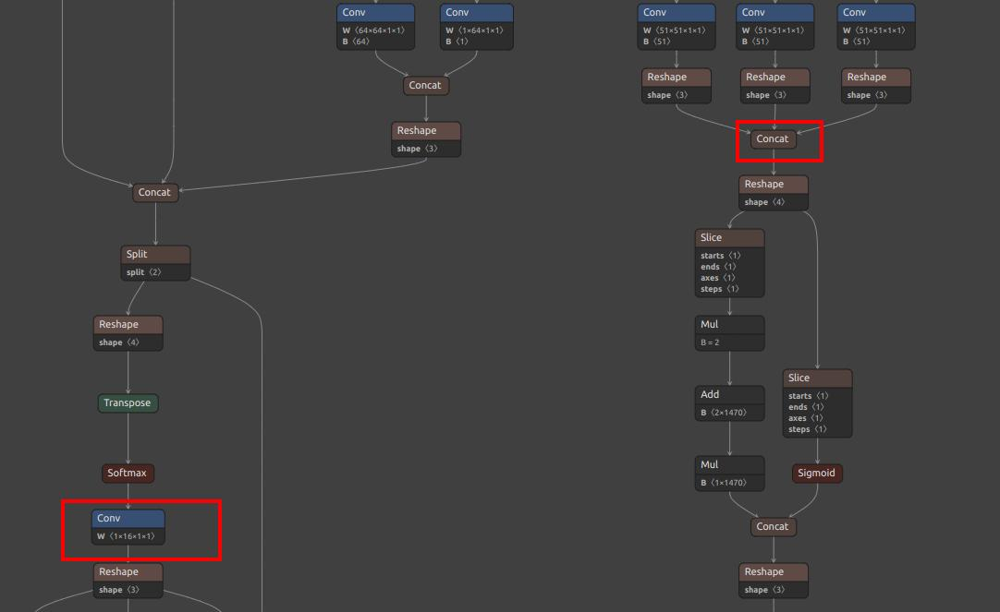
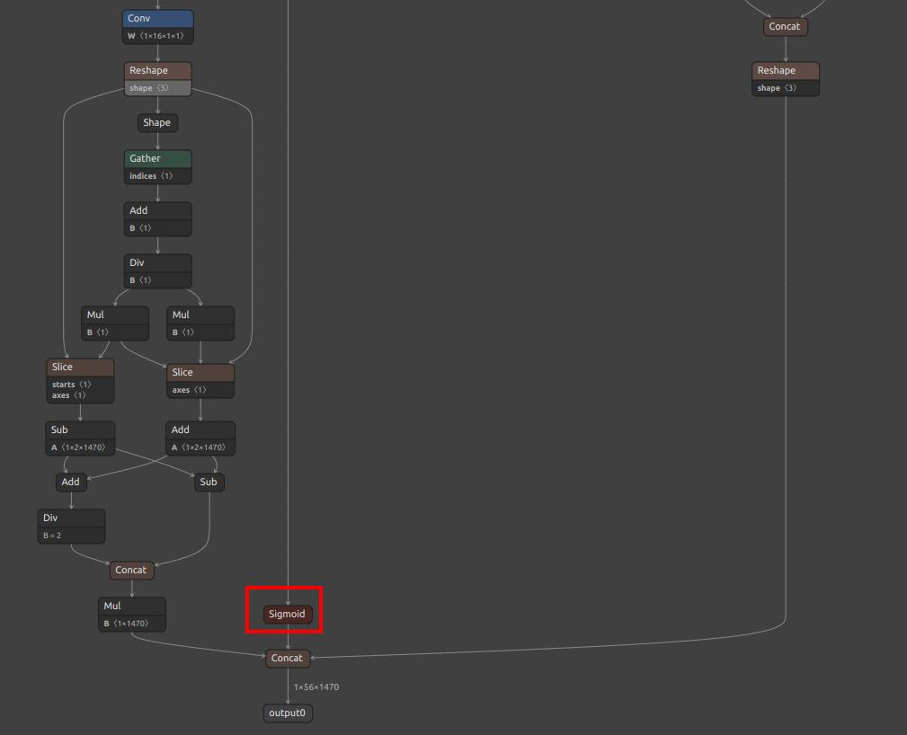

English
EnglishOffline Training for YOLO11/YOLOv8 Models on MaixCAM MaixPy to Customize Object and Keypoint Detection
Update history
| Date | Version | Author | Update content |
|---|---|---|---|
| 2024-10-10 | v2.0 | neucrack | Added YOLO11 support |
| 2024-06-21 | v1.0 | neucrack | Document creation |
Introduction
The default official model provides detection for 80 different objects. If this doesn't meet your needs, you can train your own model to detect custom objects, which can be done on your own computer or server by setting up a training environment.
YOLOv8 / YOLO11 not only supports object detection but also supports keypoint detection with YOLOv8-pose / YOLO11-pose. Apart from the official human keypoints, you can also create your own keypoint dataset to train models for detecting specific objects and keypoints.
Since YOLOv8 and YOLO11 mainly modify the internal network while the preprocessing and post-processing remain the same, the training and conversion steps for YOLOv8 and YOLO11 are identical, except for the output node names.
Note: This article explains how to train a custom model but assumes some basic knowledge. If you do not have this background, please learn it independently:
- This article will not cover how to set up the training environment; please search for how to install and test a PyTorch environment.
- This article will not cover basic machine learning concepts or Linux-related knowledge.
If you think there are parts of this article that need improvement, please click on Edit this article at the top right and submit a PR to contribute to the documentation.
Process and Article Goal
To ensure our model can be used on MaixPy (MaixCAM), it must go through the following steps:
- Set up the training environment (not covered in this article, please search for how to set up a PyTorch training environment).
- Clone the YOLO11/YOLOv8 source code locally.
- Prepare the dataset and format it according to the YOLO11 / YOLOv8 project requirements.
- Train the model to obtain an
onnxmodel file, which is the final output of this article. - Convert the
onnxmodel into aMUDfile supported by MaixPy, as described in the MaixCAM Model Conversion article. - Use MaixPy to load and run the model.
Reference Articles
Since this process is quite general, this article only provides an overview. For specific details, please refer to the YOLO11 / YOLOv8 official code and documentation (recommended) and search for training tutorials to eventually export an ONNX file.
If you come across good articles, feel free to edit this one and submit a PR.
Exporting YOLO11 / YOLOv8 ONNX Models
Create an export_onnx.py file in the ultralytics directory:
from ultralytics import YOLO
import sys
print(sys.path)
net_name = sys.argv[1] # yolov8n.pt yolov8n-pose.pt # https://docs.ultralytics.com/models/yolov8/#supported-tasks-and-modes
input_width = int(sys.argv[2])
input_height = int(sys.argv[3])
# Load a model
model = YOLO(net_name) # load an official model
# model = YOLO("path/to/best.pt") # load a custom model
# Predict with the model
results = model("https://ultralytics.com/images/bus.jpg") # predict on an image
path = model.export(format="onnx", imgsz=[input_height, input_width]) # export the model to ONNX format
print(path)
Then run python export_onnx.py yolov8n.pt 320 224 to export the onnx model. Here, we have redefined the input resolution. The model was originally trained with 640x640, but we use 320x224 to improve the processing speed and match the MaixCAM's screen aspect ratio for convenient display. You can set the resolution according to your own needs.
Converting to a Model Supported by MaixCAM and MUD File
MaixPy/MaixCDK currently supports YOLOv8 / YOLO11 for object detection, YOLOv8-pose / YOLO11-pose for keypoint detection, and YOLOv8-seg / YOLO11-seg for segmentation (as of 2024-10-10).
Follow MaixCAM Model Conversion to convert the model.
Pay attention to the model output node selection:
- Object detection:
- YOLOv8 extracts
/model.22/dfl/conv/Conv_output_0,/model.22/Sigmoid_output_0from ONNX as outputs. - YOLO11 extracts
/model.23/dfl/conv/Conv_output_0,/model.23/Sigmoid_output_0.
- YOLOv8 extracts
- Keypoint detection:
- YOLOv8-pose extracts
/model.22/dfl/conv/Conv_output_0,/model.22/Sigmoid_output_0,/model.22/Concat_output_0as outputs. - YOLO11-pose extracts
/model.23/dfl/conv/Conv_output_0,/model.23/Sigmoid_output_0,/model.23/Concat_output_0.
- YOLOv8-pose extracts
- Image segmentation:
- YOLOv8-seg extracts
/model.22/dfl/conv/Conv_output_0,/model.22/Sigmoid_output_0,/model.22/Concat_output_0,output1. - YOLO11-seg extracts
/model.23/dfl/conv/Conv_output_0,/model.23/Sigmoid_output_0,/model.23/Concat_output_0,output1.
- YOLOv8-seg extracts
 
For object detection, the MUD file would be as follows (replace yolo11 for YOLO11):
[basic]
type = cvimodel
model = yolov8n.cvimodel
[extra]
model_type = yolov8
input_type = rgb
mean = 0, 0, 0
scale = 0.00392156862745098, 0.00392156862745098, 0.00392156862745098
labels = person, bicycle, car, motorcycle, airplane, bus, train, truck, boat, traffic light, fire hydrant, stop sign, parking meter, bench, bird, cat, dog, horse, sheep, cow, elephant, bear, zebra, giraffe, backpack, umbrella, handbag, tie, suitcase, frisbee, skis, snowboard, sports ball, kite, baseball bat, baseball glove, skateboard, surfboard, tennis racket, bottle, wine glass, cup, fork, knife, spoon, bowl, banana, apple, sandwich, orange, broccoli, carrot, hot dog, pizza, donut, cake, chair, couch, potted plant, bed, dining table, toilet, tv, laptop, mouse, remote, keyboard, cell phone, microwave, oven, toaster, sink, refrigerator, book, clock, vase, scissors, teddy bear, hair dryer, toothbrush
Replace labels according to the objects you trained.
For keypoint detection (yolov8-pose), the MUD file would be (replace yolo11 for YOLO11):
[basic]
type = cvimodel
model = yolov8n_pose.cvimodel
[extra]
model_type = yolov8
type = pose
input_type = rgb
mean = 0, 0, 0
scale = 0.00392156862745098, 0.00392156862745098, 0.00392156862745098
labels = person
The default model is for human pose detection, so labels only contains person. Replace it according to your detected objects.
For image segmentation (yolov8-seg), the MUD file would be (replace yolo11 for YOLO11):
[basic]
type = cvimodel
model = yolo11n-seg_320x224_int8.cvimodel
[extra]
model_type = yolov8
input_type = rgb
type = seg
mean = 0, 0, 0
scale = 0.00392156862745098, 0.00392156862745098, 0.00392156862745098
labels = person, bicycle, car, motorcycle, airplane, bus, train, truck, boat, traffic light, fire hydrant, stop sign, parking meter, bench, bird, cat, dog, horse, sheep, cow, elephant, bear, zebra, giraffe, backpack, umbrella, handbag, tie, suitcase, frisbee, skis, snowboard, sports ball, kite, baseball bat, baseball glove, skateboard, surfboard, tennis racket, bottle, wine glass, cup, fork, knife, spoon, bowl, banana, apple, sandwich, orange, broccoli, carrot, hot dog, pizza, donut, cake, chair, couch, potted plant, bed, dining table, toilet, tv, laptop, mouse, remote, keyboard, cell phone, microwave, oven, toaster, sink, refrigerator, book, clock, vase, scissors, teddy bear, hair dryer, toothbrush
Upload and Share on MaixHub
Visit the MaixHub Model Library to upload and share your model. Consider providing multiple resolutions for others to choose from.